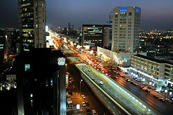
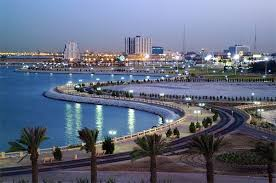
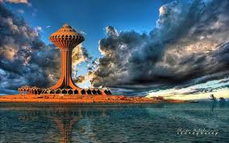

Al-khobar
is a city located in the Eastern Province of the Kingdom of Saudi Arabia on the coast of the Arabian Gulf.
It is one of the largest cities in the Gulf Cooperation Council, with a population of 941,358 as of 2012. Khobar, Dammam, and Dhahran are part of the Dammam metropolitan area, the 3rd largest metropolitan area in Saudi Arabia with an estimated population of over 4,100,000 as of 2012.
All three urban centers are served by the King Fahd International Airport and King Abdul Aziz Port. Together, they are often known as "The Triplet Cities" by many natives and locals. Dammam, Dhahran and Al Khobar are less than 15 km (9.3 mi) apart and form one metropolitan area, the fifth largest in the kingdom and sixth in the Gulf Cooperation Council.


